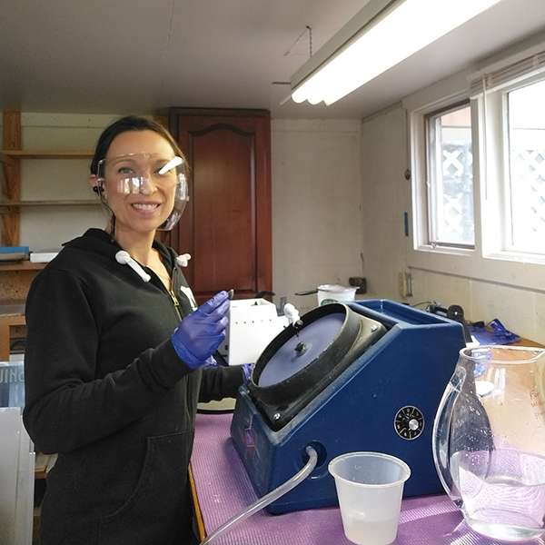
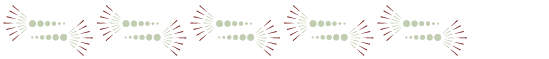

Thank you for visiting my website! I started Claire Lorts Designs in 2020 and primarily focus on designing and creating wooden jewelry. I also enjoy sterling silver jewelry design and lapidary work (finding, cutting, shaping, and polishing stones for jewelry) using historic iron slag and Fordite, pyrography (wood burning art), and wood chip carving. I live in Central Pennsylvania with my husband and cat, and enjoy visiting family in Michigan and Nevada! Please do not hesitate to contact me with any questions, and make sure to check out the FAQ section below!
Jewelry/Key Displays & Mirrors
In addition to creating jewelry, I enjoy pyrography (wood burning), painting,
and working with wood as a canvas. Prior to making jewelry, I spent some time creating work that could be mounted on a wall and
served as a way to hang jewelry or keys on hooks. These wooden pieces were created using a scroll saw and finished using pyrography
and acrylic paint. I also created painted wooden pieces that incorporated a mirror, with various designs surrounding and overlapping the mirror component.

FAQ — Wooden Jewelry
Caring for your wooden jewelry.
Part of the beauty of my wooden jewelry is that it's natural, untreated wood. Every single design and species of wood used to make jewelry are put through a series of short and long-term tests to ensure that they are structurally sound for daily wear. However, any wooden jewelry made from untreated natural wood is delicate by nature and should be treated as such. Please take care to store your jewelry in a safe location while not wearing them, and do not wear them while showering or in water.
What materials do you use for earring French hooks and stud posts?
* For those with sensitive ears, I recommend either surgical steel or titanium.
I use high quality 316L grade surgical steel French hooks, however if you require a different material I also carry titanium (Grade 1, ASTM F67, unalloyed), 925 sterling silver, 925 gold plated sterling silver, or medical grade PC plastic (metal free). If you would like any of these alternative options (no extra charge), please indicate your preference in a message at checkout.
I use stainless steel stud posts with stainless steel butterfly backings, however if you require a different material I also carry titanium (Grade 1, ASTM F67, unalloyed) and acrylic posts. If you would like any of these alternative options (no extra charge), please indicate your preference in a message at checkout.
Is the wood you use treated?
All of the wood I use is untreated and 100% natural and solid!